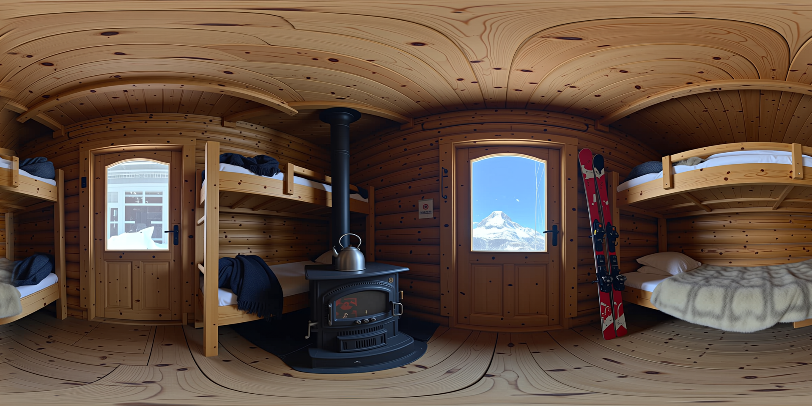
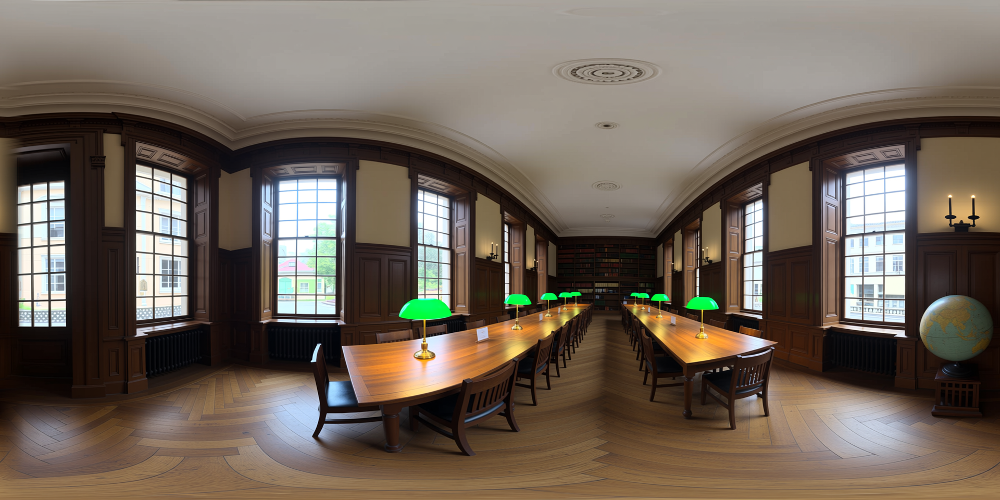

01 / Visual evidence
From words
to a sense of place.
These panoramas came from the working generation pipeline. Explore the original archived outputs, from a quiet interior to a landscape at dusk.

Canal at dusk
Generated 360° panorama. A text-to-scene output from the archived research pipeline.


Mountain hut
Generated 360° panorama. A wooden refuge with bunk beds, a stove and a view of the mountains.


Quiet reading room
Generated 360° panorama. An interior scene from the same generation pipeline.

Desert oasis
Generated 360° panorama. Visual atmosphere is one part of the challenge; coherent, walkable space is the next.
Panoramic projection distorts the top and bottom of these flat images. The gallery does not establish reliable free movement, persistent edits, or a lifelike interactive avatar. Read the provenance and limits.
02 / The real challenge
A place is more
than a picture.
The research question is continuity: can a world keep its identity—and a guide its understanding—as you move, speak and change things?
What this evidence shows
- Scenes generated from words.Archived panoramic outputs across outdoor places and an interior.
- An inspectable starting point.Selected images, their provenance and explicit limits, shared for scrutiny.
What we are working toward
- A world that stays itself.Stable geometry and object identity through movement and spoken changes.
- A guide with presence.A lifelike 3D avatar grounded in the scene and in what you are looking at.
- One natural conversation.Voice, attention and world creation working together in a continuous experience.
03 / Research in the open
Make the experience real.
Make the evidence clear.
The ambition is a dependable way to create places you can explore and understand together. The standard is repeatable results, fair comparisons and an honest account of failures. A compelling image is a beginning.